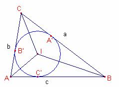

Problema 308
De
investigación
Problema 308
Aplicaciones del álgebra a la
geometría
201. La suma de los inversos de los
radios de los círculos exinscritos de un triángulo es
igual al inverso del radio del círculo inscrito, y la raíz cuadrada del
producto de los cuatro radios es igual al área del círculo (sic) [Es un
“despiste”, se trata del área del triángulo N. del D.].
Severi, F. (1952) :
Elementos de geometría II, con 144 figuras, traducción de la segunda edición
italiana por el profesor T. Martín Escobar, de la Escuela Industrial de Gijón.
Tercera reimpresión. Editorial Labor, Barcelona. Talleres Gráficos
Ibero-Americanos S.A. Reproducción offset. (pág 201)
Del prólogo:
…Tener a la vista el origen histórico
y buscar el fundamento psicológico de cada teoría y sobre todo las nociones de
sentido común de donde ésta nace para encontrar la vía didácticamente más
oportuna.
Descubierta la vía maestra, es
necesario comenzar de nuevo y desbrozar los senderos que en ella desembocan de
las dificultades demasiado graves para los inexpertos, de modo que el alumno
pueda recorrerlos siguiéndonos, sin excesivo esfuerzo, en el proceso
constructivo.
Hacer que todo esto se
encuentre liso y llano, no conviene. Desvanece el deseo juvenil de la
conquista, y la teoría, ya demasiado afinada, aparece lejana de la vida e
interesa poco…
Propiedad:
Proporción entre los radios de las circunferencias inscritas y exinscritas.
Sea el triángulo  .
.
Sean r y los radios de les circunferencias
inscrita y exinscrita, respectivamente.
Entonces,  donde p es el semiperímetro del triángulo
donde p es el semiperímetro del triángulo  .
.
Demostración:

Sean los puntos A’, B’, C’ los puntos de tangencia de la circunferencia
inscrita al triángulo  con los lados.
con los lados.
.
Entonces, .
 .
.
Por tanto  .
.
Análogamente, .
Sea la circunferencia exinscrita de centro y radio .
Sean A”, B”, C” los puntos de tangencia de la circunferencia inscrita al
triángulo  con las prolongaciones
de los lados.
con las prolongaciones
de los lados.

Calculemos  i
i  .
.
 .
.
Entonces; 
Sumando las expresiones:
, entonces,  .
.
Por tanto, .
Los triángulos ,  son semejantes, entonces,
son semejantes, entonces,  .
.
Análogamente, ,  .
.
Fórmula de Herón. El área de un triángulo es:
es:
 .
.
O
bien:  .
.
Fórmula del área
en función del radio de la circunferencia inscrita. El área de un triángulo es:
es:
 donde
p es el semiperímetro
donde
p es el semiperímetro  .
.

Sea I el incentro del triángulo  . Sea r el radio de la circunferencia inscrita a
. Sea r el radio de la circunferencia inscrita a  . Sean A’, B’, C’, los puntos de tangencia de la circunferencia
inscrita y el triángulo
. Sean A’, B’, C’, los puntos de tangencia de la circunferencia
inscrita y el triángulo  .
.
Podemos notar que  .
.
El área del triángulo  es igual a la suma de
las áreas de los triángulos , ,
es igual a la suma de
las áreas de los triángulos , , 
 .
.
Nota 1:
Fórmula para calcular el radio de la circunferencia
inscrita en función de los lados.
 .
.
Nota 2: A partir de la proporción entre los radios
de las circunferencias inscrita y exinscritas
tenemos las fórmulas de los radios de las exinscritas
en función de los lados:
, , 
En cualquier triángulo  la relación de los radios
de la circunferencia inscrita, y de las exinscritas es
la siguiente:
la relación de los radios
de la circunferencia inscrita, y de las exinscritas es
la siguiente:
.

Demostración
A partir de la proporción entre los radios de la circunferencia inscrita y las
exinscritas obtenemos:
 , ,
, ,  , donde
, donde
 .
.
 .
.
Dividiendo la expresión por r:
.
Nota: Otra fórmula
de los radios:  .
.
Sea el triángulo  .
.
Sean r el radio de la circunferencia inscrita y ra
rb rc
los radios de las circunferencias exinscritas.
Entonces el área del triángulo  es
es  .
.
Demostración:
A partir de la proporción entre los radios
de las circunferencias inscrita y exinscritas
obtenemos las fórmulas de los radios de las exinscritas
en función de los lados:
 , , , donde
, , , donde

El radio de la circunferencia inscrita en función de los lados es: .
.
Entonces,  .
.